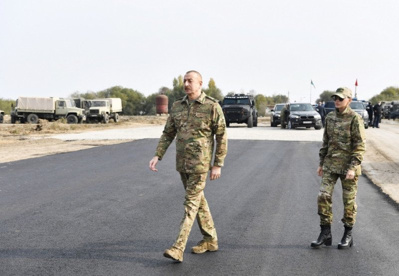
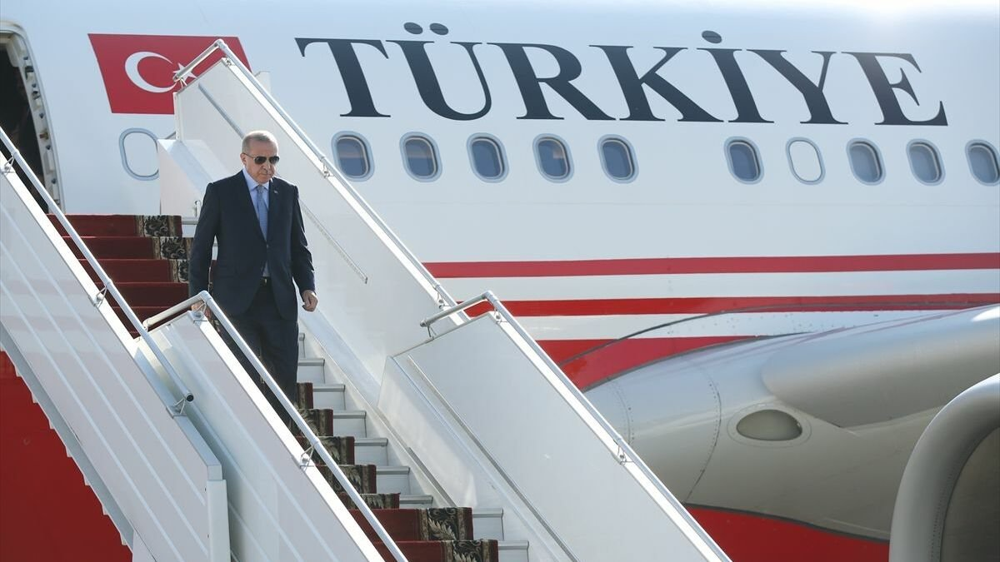
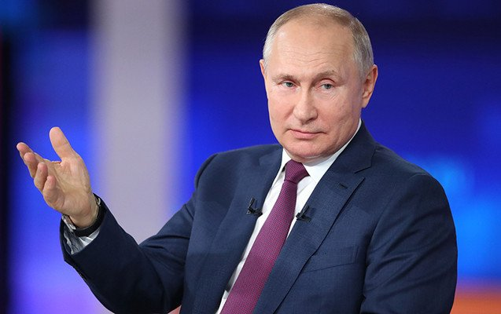
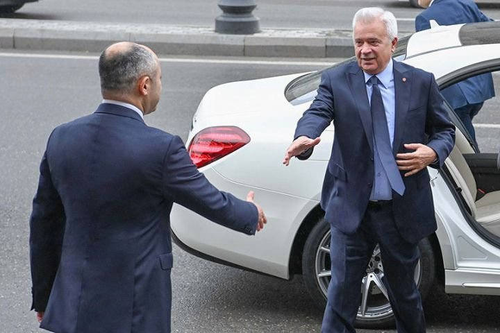
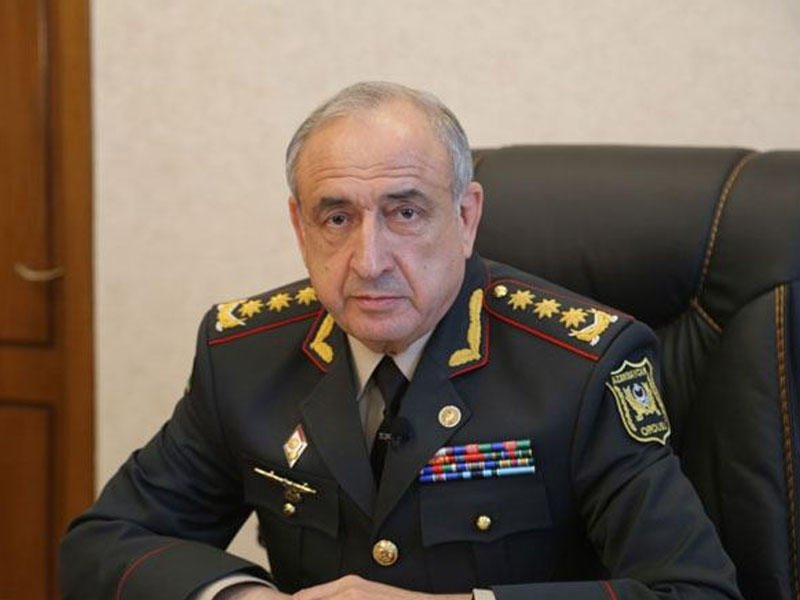

Baku News
Main page
About
Contact us


Siyasət
Dünya
İqtisadiyyat
Maliyyə
Mədəniyyət
İdman
Təhsil
Səhiyyə
Cəmiyyət
Sosial
Turizm
Şou-biznes
Hadisə
Kriminal
Qarabağ
Texnologiya
Son xəbərlər

Azərbaycan Respublikasının Prezidenti İlham Əliyev və birinci xanım Mehriban Əliyeva Zəngilan Beynəlxalq Hava Limanının tikintisi ilə tanış olublar.
BAKU.NEWS xəbər verir ki, məlumatı Azərbaycan Prezidentinin Mətbuat Xidməti yayıb.
Qeyd edək ki, oktyabrın 20-də Prezident İlham Əliyev və birinci xanım Mehriban Əliyeva Zəngilan rayonunda səfərdə olublar.

“Oktyabrın 26-da Azərbaycana səfərim olacaq. Səfər proqramında Bakıda olmaq nəzərdə tutulmayıb, amma inşallah Füzuli Beynəlxalq Hava Limanının açılışında iştirak edəcəyəm”.
BAKU.NEWS xəbər verir ki, bunu Türkiyə Prezidenti Rəcəb Tayyib Ərdoğan Afrikadan qayıdarkən jurnalistlərin sualını cavablandıran zaman deyib.
Türkiyə dövlət başçısı bildirib ki, səfərlə əlaqədər Azərbaycan Prezidenti İlham Əliyevlə müzakirələr aparıb: “Bu mövzuyla bağlı qardaşım İlham Əliyevlə də müzakirə aparmışıq. Səfər çərçivəsində hava limanı, oradakı bir neçə magistral yolun açılışını edəcəyik və kənd təsərrüfatı ilə bağlı görülən bəzi işlərlə tanış olacağıq”.

“Ermənistan və Azərbaycan sərhəd məsələsini sovet dövrünün xəritələrinə əsaslanaraq həll edə bilər, lakin bu proses qarşılıqlı güzəştlər tələb edir”.
BAKU.NEWS bildirir ki, bunu Rusiya Prezidenti Vladimir Putin Valday forumunda çıxışı zamanı deyib.
“İndi ən vacib məsələ sərhəddəki vəziyyəti həll etməkdir və burada, təbii ki, Rusiyanın iştirakı olmadan heç nə etmək olmaz. Bizə iki tərəf və Rusiyadan başqa heç kim lazım deyil. Niyə? Çox sadə, praqmatik şeylərə görə: Çünki Rusiya ordusunun Baş Qərargahında Sovet dövründə ittifaq respublikaları arasında sərhədin necə keçdiyini göstərən xəritələr var. Elə şeylər var ki, həm də qarşılıqlı kompromislər tələb edir. Yalnız bu yolla hər iki tərəf üçün nəyin faydalı olacağını aydınlaşdırmaq mümkündür”, - deyə Putin bildirib

Oktyabrın 20-də "Yelo Bank" ASC-nin yeni baş ofisinin rəsmi açılış mərasimi baş tutub.
BAKU.NEWS xəbər verir ki, ASC-nin yaydığı məlumatda bildirilir ki., tədbirdə Bankın bütün səhmdarları, Azərbaycan Respublikası Mərkəzi Bank rəhbərliyi, eləcə də digər rəsmi şəxslər iştirak edib.
H.Zərdabi prospekti 81K ünvanında yerləşən müasir ofis binası bankın yeni "Parlaq Bankçılıq" konsepsiyasına uyğun olaraq təmir edilib.
Bina geniş ofis sahəsi, rahat iş yerləri, böyük akt zalı, kitabxana, idman zalı və yeməkxana da daxil olmaqla öz funksionallığı ilə seçilir. Qeyd olunanların hamısı əməkdaşlara iş məsələlərini həll etməklə bərabər, ünsiyyət, sosiallaşma , qarşılıqlı əlaqə və görüşlər üçün də imkan yaradır.
Açılışda çıxış edən tanınmış milyarder iş adamı Vahid Ələkbərov bu ilin əvvəlindən həyata keçirilən yeni strategiyanın düzgünlüyünə əminliyini bildirib və Bankın yüksək maliyyə göstəricilərinin də bunun sübutu olduğunu ifadə edib:
“Yelo Bank, missiyası həm kiçik və orta sahibkarlığa dəstək göstərməkdən, həm də Azərbaycan əhalisinə geniş çeşiddə maliyyə xidmətləri təqdim etməkdən ibarət olan müasir bir brenddir.
Bu gün gördüyümüz hər bir şey komandanın peşəkarlığını sübut edir. Yelo Bank rəhbərliyi və kollektivini bu əlamətdar hadisə münasibəti ilə bir daha təbrik edirəm, hər kəsə uğurlar və qoyulmuş hədəflərə çatmağı arzulayıram".
Mərkəzi Bankın sədri Elman Rüstəmov yeni baş ofisin açılışı münasibətilə bank kollektivini təbrik edib və rebrendinq prosesindən sonra Yelo Bankın əldə etdiyi nəticələri yüksək qiymətləndirdiyini bildirib.
Yelo Bankın Müşahidə Şurasının sədri Marina Kulişova uzun müddətdir gözlənilən yeni baş ofis açılışının Bankın rebrendinq prosesinin məntiqi nəticəsi olduğunu qeyd edib:
"Baş ofis istənilən təşkilatın ürəyi və beyin mərkəzidir. Əsas sərvətimiz burada çalışan əməkdaşlar olduğundan, komandamız üçün ən rahat şəraitin yaradılmasına xüsusi diqqət yetirdik".
Yelo Bankın İdarə Heyətinin sədri Anar Həsənov baş ofis açılışının yeni strategiyanın həyata keçirilməsində növbəti addım olduğunu təsdiqləyib:
“Bank xidmət səviyyəsində artıq keyfiyyətcə yeni mərhələyə çatıb. Yeni strategiyamıza əsasən iqtisadiyyatın real sektorunu dəstəkləməyə davam edəcəyik. Həmçinin, müştərilərimizin bank təcrübəsini təkmilləşdirmək üçün yeni innovativ həllər axtararaq pərakəndə bankçılığı da fəal şəkildə inkişaf etdirəcəyik.
Əsas strateji biznes hədəflərimizin reallaşdırılmasında Banka göstərdiyi əvəzsiz dəstəyə görə çox hörmətli Vahid Ələkbərova təşəkkür etmək istəyirəm”.

Prezident İlham Əliyev Məhərrəm Əliyev haqqında sərəncam imzalayıb.
BAKU.NEWS xəbər verir ki, sərəncama əsasən, Azərbaycanda dövlət qulluğunda uzunmüddətli səmərəli fəaliyyətinə görə Məhərrəm Abış oğlu Əliyev “Şöhrət” ordeni ilə təltif edilib.
Qeyd edək ki, sabah Prezidentin köməkçisi, Prezidentin Administrasiyasının Hərbi məsələlər şöbəsinin müdiri general-polkovnik Məhərrəm Əliyevin 70 yaşı tamam olacaq.